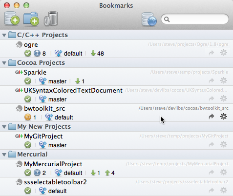

Bookmarks: Overview
SourceTree can track all of your Git and Mercurial repositories in the Bookmarks window, showing you an instant live overview of their statuses, so you can see what needs committing, or where merges need resolving, or even when there are commits on your chosen remotes that are waiting to be pulled,

Adding new bookmarks is easy, either from your file system, from a clone URL, from hosting services like Bitbucket and GitHub, or by creating new repositories.
Each bookmarks displays a user-assigned name, the path, a summary line and buttons to open the full repository window or perform actions on the repository here. You can organise this list however you like using groups and dragging / dropping.
You can also quickly search your bookmarks by using the search box in the top-right, and right-click on the list to perform other actions like sorting and creating new entries.
See also
Adding your existing local source folders
Cloning a repository
Creating a blank repository
Organising your bookmarks